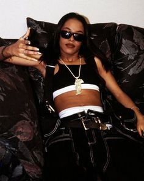

"Create today tomorrow is not promised" is the quote that inspired this initiative. This site is where I plan on placing my random weekend projects and small collections for fun. Lmk if you enjoy the experience. IG: tlflee
Moms didn't let me listen to music with cussin: 7/13/20
"My momma didn’t let me play music in the car with cursing in it." For those who don’t know me the 3 things I absolutely love about art are community, storytelling, and music. Personally, I appreciate all the many voids music fills in my life. For this Weekend Project, I reached out to a couple of my friends to help me curate a playlist to inspire creative work. I think we did a good job of providing you with the bops you need while chasing your dreams lol. Call (312) 650-9120 and leave a voice message to let me know what you think! Love From TLF Studios, Brianna
Caleb's Interlude
Mariam's Interlude
Carlena's Interlude
Claire's Review
My First Time Making Jeans: 7/5/20
This weekend project was a sewing project: My first time making jeans. I’ve been wanting to make some jeans for the longest but I’ve always been afraid of failing at it (aka too lazy to make multiple prototypes). However, I decided to do it this past weekend and after having to pull out 3 of my machines and take 3 trips to the fabric store I finally did it!
I decided to go simple for my first try, but the style of the jeans was inspired by many influences. My sister was a tomboy, so growing up I thought that the tomboy look was the standard way for girls to dress lol. I’ve also been meaning to buy a pair of EVISU jeans so these jeans were also inspired by them. Along with the jeans are a pair of lace boxer shorts that I made [which I absolutely adore]. This was also my first time using a pattern because I was never taught how to use one (For background info: I first learned how to sew when I was probably in elementary school by attending sewing classes at Joann Fabrics with my big sister. In middle school, my mom put me in summer fashion design camps at SAIC every year which is where I learned the basics. Everything else I learned was a combination of spending Saturdays sewing with the ladies from church and YouTube videos). I had fun with this sewing project mainly because I don’t usually ever finish anything I start. Tap Aaliyah’s photo for pictures of the jeans ✨

Nigga Got Wings A Nigga Gotta Fly: 7/17/17
I first learned about Morse Code from a tv show called Quantico. I thought it was the coolest thing ever. Sidenote: I'm actually taking a class rn where we learn how to create our own programming language. I think language is really interesting and it's always been something that intrigued me. I remember my great-aunt telling me that she never learned how to read or write in school because she couldn't go. Being exposed to my family member's stories is why incorporating storytelling in my art is so important to me. Fast-forward, I learned that I could iron press images onto t-shirts when I started volunteering at MSI in high school, since then I never stopped. Tap the photo to see some throwbacks of t-shirts that I made.
mommyandfriends: 6/14/20
I often look through my mom's old art specifically her photographs. She grew up in Cabrini-Green in Chicago. That's why I always watermark her photos with "Cabrini Green Queens" lol. I've always expressed to her interest in working with art and tech and she told me to do both, so a lot of stuff on this page is just me tinkering with both, because I can. Open this page in Safari and tap or click on the photo to interact with the AR.
This shirt was inspired by my cousin's school photo that I took from my auntie's house. The shirt was a part of a collection I did called the "Family Portrait," in which I turned my interpretation of various family member's personalities into designs. This was the first time I converted a physical object into a 3d model so it looks a bit rough lol. Open this page in Safari and tap or click on the photo to see the shirt in AR.